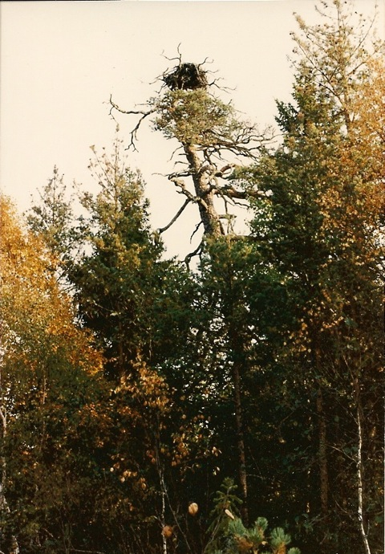
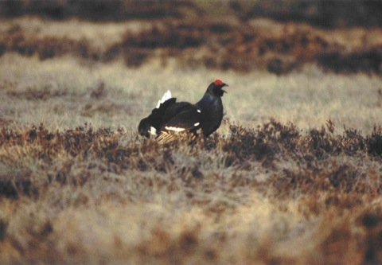

Går igenom några av arterna i Florarna och var du med stor tur kanske skulle kunna se dem.
Tydliga spår av hackspett! . Foto: Ronny Fredriksson
För att nämna några:
Trana
Tranan är nog den fågel som under våren tidiga morgnar och i kvällens skymning hörs mest. Då hörs paren signalera från sina revir på myrarna. Under sommaren blir de försiktigare under häckningstiden för att sedan ses i mindre flockar på tidig höst. Ofta familjerna som verkar vara ute och ”träningsflyga”. Än senare på hösten samlas de i stora flockar för att förberedda sig för flytten söderut. Tranorna brukar anlända till Florarna i mitten av april.
I Florarna finns uppskattningsvis 5-6 par tranor som häckar. Brukar vara fördelat på par vid Ressaren, Andersbo-Liss sjön, Hillebolamossen, SV om Fillsartrusket samt vid Risö trusk. Emellanåt finns det även par vid Fälaren, Dikesmyren och Hålmyrarna.
Två tranor flyger över Stora Agnsjön. Foto: Ronny Fredriksson
Storlom
Den klassiska fågeln för skogsjöar och ödemark, storlommen, fanns längre tillbaks i flera av Florarnas sjöar. Det var ofta en av de fantastiska konserter man kunde höra i Florarna en försommarnatt.
In på 1980-talet fanns den häckande i Fälaren, Stora Agnsjön, Vikasjön och Finnsjön. Under 2012 har jag enbart sett den under häckningstid i Finnsjön, men jag misstänker att den även finns i Fälaren.
Det finns antagligen flera skäl till att denna fina art minskat.
Historiskt
Allan Lundin nämner 1951-1954 följande om storlommen:
”Den granna storlommen finns numera regelbundet endast i Finnsjön. I Vikasjön brukar häckningen alltid misslyckas, troligen på grund av störningar i samband med fiske. Förr fanns den även i Stora Agnsjön.”
Sixten Jonsson nämner 1961 följande om storlommen i sin bok ”Fågelmyren”:
”Storlommen och hans rungande rop under vårnätterna hör ihop med myrlandskapet. Idealiska häckplatser har också storlommen ute på lågbevuxna öar i en tjärn. I Vikasjön finns ett par medan Finnsjön hyser tre om inte fyra par.”

Storlom på södra delen av Finnsjön den 8 augusti 2012. Foto: Ronny Fredriksson
Törnskata
Kring de öppna myrarna finns en ganska stor chans att se en av Florarnas karaktärsfåglar, törnskatan. Den syns ofta bra eftersom den sitter ganska fritt på en död toppkvist och spanar. Bytet den spanar efter är insekter, men den kan också ta grodor, små möss och fågelungar. Vid Karbotten (grillholmen) hade jag turen att få se den fånga en liten groda och dra iväg med mot lilla Kojholmen där den antagligen hade sitt bo.
Törnskatan brukar i Florarna dyka upp i mitten av maj och sedan försvinner den oftast i augusti.
Den här törnskatan höll till i brynet av björkbuskar och träd norr om Gammelån. Foto: Ronny Fredriksson
Fiskgjuse
Fiskgjusen har de sista åren (2011-2014) haft minst två bebodda bon i området. När jag började röra mig i området på 1980-talet var det fem.
Det är en härlig upplevelse att få se en fiskgjuse i fiskafänge. Första gången jag såg en fiskgjuse fiska var vid ett besök i det gamla fågeltornet nere vid Filmsjön på 1980-talet. Sedan har jag sett den åtskilliga gånger tidig vår när ån mellan Vikasjön och Skälsjön gått upp…..seglande ganska högt upp och intensivt spanande ner mot vattnet. Sedan hur den sänker sig gradvis….för att sedan dyka mot målet med klorna redo och dyka och slå mot vattenytan ovanför fisken…ofta nästan försvinna och sedan ”kava uppåt”, ibland med en fisk i klorna och emellanåt utan.
Tyvärr har jag ännu inte lyckats fånga någon fiskgjuse på bild med en fisk i klorna….det är ett av målen jag har med min naturfotografering. I Sixten Jonssons bok ”Fågelmyren” från 1963 som handlar om Florarna….finns några fantastiska bilder på just fiskgjuse.
En rolig berättelse från trakten är att en gubbe som kom körande på vägen mellan Ulvsbo och Kalvsbo plötsligt fick något som small ner på bilhuven….han bromsade…gick ur bilen och konstaterade att en mindre gädda låg mitt på huven. Gubben for in i skogen övertygad om att någon illbatting drev med honom och slängt fisken på bilen. Men gubben hittade ingen på någon sida av vägen. Nåväl, gäddan verkade ganska färsk så han tog med den hem till tanten och de gjorde mat av den. Ett antal år senare så var han och fiskade med en kamrat i Fälaren…..och kamraten visade då på en stor fågel som hängde över sjön….”en fiskgjuse på fiskafänge sa kamraten…titta nu…det är ganska kul”. Gubbarna tittade på gjusen…vår gubbe, han med bilen, tittade mest eftersom han aldrig sett detta förut….gjusen dök….kavade upp med en mindre gädda och drog iväg österut över skogen…kronan ramlade ner för gubben och han insåg att det var en fiskgjuse som bjudit på gäddan på bilhuven….
Historiskt
Allan Lundin 1951-1954:
”Av fiskgjuse brukar två par regelbundet häcka. 1954 gjordes ett misslyckat häckningsförsök av ännu ett par, två mörka, tydligen yngre fåglar.”
Sixten Jonsson i boken Fågelmyren 1961:
”Rätt ofta ser man också gjusen komma långsamt vingkavande över insjövattnen. Vi har hälsat på hos en fiskgjusfamilj och finner nu gjusen komma stretande i sidvåden, återvändande från Agnsjöarna med ett norpat middagsmål i klorna. Kursen är bågig men bestämd mot Hillebolamossarna. Ett annat gjusar har vi funnit häckande bortom Lilla Agnsjön. Risborgen vid Stora Agnsjön, som annars skulle ha stått ledigt för året, la pilgrimsfalken beslag på.”
Fiskgjuse över Vikasjön. Foto: Ronny Fredriksson

Det gamla fiskgjusboet vid Dikesmyren på 1980-talet (sannolikt det bo som Sixten Jonsson nämner i boken ”Fågelmyren” från 1961. Den gamla tallen föll i början av 1990-talet. Foto: Ronny Fredriksson
Gjusboet vid Dikesmyren sannolikt på slutet av 1960-talet. Foto: Holger Hagel
Lite vy från boet vid Dikesmyren. Dock inte riktigt upp i samma nivå. Boet hade bättre utsikt. Foto: Ronny Fredriksson
Havsörn
Har haft ett av mig känt bo i Florarna. Men vet inte hur det är i dagsläget. Kan dock notera att jag ser havsörn relativt regelbundet i området, ofta i anslutning till de större sjöarna.
Det är alltid härligt att se örn. En mycket speciell känsla när de stora som ett ordinärt sofflock seglar högt upp i skyn. Framförallt gillar jag att se de gamla havsörnarna med sina kritvita stjärtar som bryter mot det övriga mörka på fågeln. Jag minns för ganska många år sedan då jag för första gången såg ett havsörnspar som segelflög högt över en av de mindre sjöarna i Florarna….fick nästan hjärtklappning….det ska noteras att sedan dess har havsörnstammen stärkts rejält i Sverige…men jag kommer alltid att tycka att det är en fantastiskt mäktig upplevelse att se dem.
Denna havsörn kom över Stenstamon vid Vikasjön. Foto: Ronny Fredriksson
Gammal havsörn. Foto: Ronny Fredriksson
Diverse benbitar upphittat under det av mig kända havsörnsboet. Foto: Ronny Fredriksson
Havsörnsboet kan ses ganska högt upp i tallen i mitten som en svart klump. Foto: Ronny Fredriksson
Lärkfalk ses emellanåt över Storfloran och Hillebolamossen.
Brun kärrhök besöker emellanåt området.
Kattuggla brukar höras i närheten av Karkebo, Bystaden, ibland vid Vika samt vid Randersbo.
Lappuggla
I samband med en runda kring Mörkhusmossen i skogarna på östra sidan om Finnsjön den 9 augusti 2012 upptäckte jag en stor rovfågel som kom flygande över hällmarkerna strax NO Mörkhusmossen. Fågeln satt sig en bit framför mig med ryggen mot mig. Jag tar ett antal bilder av fågeln som visar sig vara en uggla….en lappuggla, sannolikt en årsunge med ännu ej helt utvecklad fjäderdräkt. Mycket roligt.
Efter en liten stund flyger den med stora tysta vingar ut över den lilla öppna delen av Mörkhusmossen dvs i SV riktning.
Normalt finns inte lappuggla i trakterna av Florarna utan på betydligt nordligare breddgrader.
Lappuggla vid Mörkhusmossen på östra sidan om Finnsjön. Foto: Ronny Fredriksson
Lite närmare och med huvudet från andra sidan. Foto: Ronny Fredriksson
Slaguggla
När jag var yngre tyckte jag det finaste att få höra det var slagugglan. Min fascination kring slagugglan har hållit i sig genom åren, jag tror inte jag är ensam. Men från att jag tyckte att den var svårflörtad uggla att höra när jag var yngre så kan jag konstatera att jag idag hör den ganska ofta. Ibland tätt inpå gårdstunet här vid Sjudars. Med lite tur brukar man kunna höra slaguggla kring Agnsjöarna, Stormossarna, södra delen av Finnsjön samt kring Risön.
Men….som alltid med ugglor….jag kan vara ute tio nätter och inte höra ett ljud…..sedan kommer det en natt då jag lyckas höra sparvuggla, kattuggla, pärluggla, slaguggla och jorduggla samtidigt….då är det värt de tio nätterna med total tystnad…eller bara vindens sus över skog och myr….
Slagugglan dyker från sin trädgren. Foto: Ronny Fredriksson
Historiskt
Allan Lundin 1951-1954:
”Den stora slagugglan är iakttagen varje år, huvudsakligen kring egentliga Floran, och häckning är sannolik. Sommaren 1954 hörde jag den upprepade gånger inom ett tidigare ej undersökt område. Tyvärr är skogen mycket fattig på torrträd av grov kaliber. Mindre torskar finns det jämförelsevis gott om, medan alla större för länge sedan städats bort. Endast ett begränsat område inom Florans västra del finns det kvar några ståtliga aspstubbar. Visserligen kan slagugglan ibland häcka i gamla rovfågelbon, men hennes dragning till torrakeområden demonstreras ju effektivt på landskapets enda regelbundna häcklokal, Högskogen i Harbo socken.”
Sixten Jonsson i boken Fågelmyren från 1961:
”Sorgligt nog är myrskogsområdet fattigt på överdimensionerade så kallade skorstensrör. Ståndaktiga hålträd försvinner ett och ett ur skogspartierna, och självfallet får då ugglorna och andra nyttofåglar ta vägen vart de gitter.
Slagugglans sju meters bostubbe fann vi efter ihärdigt sökande i utkanten av ungbjörkskogen, bland moras och risighet. Torrvedsstammen var fläkt av färska yxhugg och urspjälkat kring bohålet.
Vi befarade det värsta , ingenting hände när jag försiktigt knackade på, det bara for ut lite multnat innanträ och någon nervirvlande yvig fjäder. Det var som vi anade från första stund: äggen, tre till antalet var kalla och således övergivna. Att de tillhörde slagugglan kunde konstateras en vecka senare, när de var rentvättade, likaså att de var lagda det året. Tydligt var alltså att slagugglan, rariteten blan uppländska ugglor, blivit grovt störd under den känsliga tiden, och så gick det som det gick med årets häckning: en övergiven kull.
Men vi blir bekanta ändå. En sen kväll, när vi hör dovstötarna från slagugglan - den sitter i uddrundningen 150 meter bort - slår jag försöksvis på en vissling, tillsatt med några extra billjud, som något liknar ett dödsskri från en sork. Efter fem sekunder kommer en svart skepnad som en skugga seglande på mjukfransiga vingar i en öppen passage mellan två björktoppar med kursen exakt insyltad på mig. Jag hör en lätt skrapning av vassa klor som griper tag i trä bakom mig. När jag försiktigt vrider mig om möter jag den effektive jägaren fastslagen på en tre meter hög spjälig torrstubbe. Vi stirrar varandra stint i ögonen en god stund....”.
Slaguggla flyger i en hyggeskant. Foto: Ronny Fredriksson
Klassisk uggleprofil i skymningen. Slaguggla. Foto: Ronny Fredriksson
Pärluggla
Pärlugglan har i år (2015) hörts i skogen väster om Risön, men det har varit glest med pärlugglor de sista åren, men platser där den hörts är kring Agnsjöarna, tidigare har den också haft en fast punkt på Stenstamon. Pärlugglan har varit sällan hörd de senaste tio åren, jag frågar mig varför? Beror det på gnagarförekomsten….jag är orolig för pärlugglan. Minns nätter vid Agnsjöstugan på 1980-talet då jag hörde ropande pärlugglor i alla fyra vädersträcken. Likaså minns jag nätter med två-tre pärlugglor nere vid morfars torp i Bennbo….där högg man iofs bort all gammelskog…sedan var pärlugglan borta. Där hade det således sin ”naturliga” förklaring dvs skogsbrukets framfart. Men den förklaringen finns inte i den inre zonen av naturreservatet.
I mitten av 1990-talet hade jag min sista stora upplevelse av pärlugglor i Florarna….då bodde jag i Gävle och hade besök av en kompis från Småland som också var fågelintresserad. Vi åkte ner till Risön…gick sedan vägen förbi tillsynsmannatorpet och till vägänden nära Stora Kojholmen….vi hörde fyra pärlugglor. Men det var nog sista gången med en så maffig konsert. Men jag håller tummarna inför varje uggelsäsong att pärlugglorna skall återkomma…de små trollen :-). 2010 och 2011 hörde jag vid något tillfälle varje säsong två pärlugglor kring Agnsjöarna….2012 hörde jag bara en. 2013 hördes även då två pärlugglor vid Agnsjöarna.
Erik Rosenberg berättar i sin bok ”Fåglar i Sverige” följande om pärlugglan: ”Förr i världen trodde det vidskepliga folket, att det var en trollhund, en vätterhund, mera sansade personer påstodo, att det var haren, mäckerharen, när pärlugglan skällande hördes i den dystra storskogens mörker. Mystiskt och ödesbetonat låter det verkligen, detta hastigt framstötta vå-vå-vå-vå-vå-, som slutar tvärt avklippt efter tre sekunders paus, stundom blott en.”
Mikael står och lyssnar efter ugglor på Lilla Agnsjöns is nära Agnsjöstugan. Foto: Ronny Fredriksson
Sparvuggla
Sparvugglan, vår minsta uggla, brukar nästan varje vårvinter höras vid Agnsjöstugan, vid Finnsjöns södra ände samt runtom parkeringen vid Stormon och Mörkmossen. Sparvugglans visslande hörs vid skymning och gryning.
En av Sveriges mest kända fågelskådare, Erik Rosenberg, beskriver i sin fantastiska fågelbok ”Fåglar i Sverige” på följande sätt: ”en knubbig figur med kort bred stjärt, som den svänger och viftar med, och ett runt huvud med vilket den snurrar åt alla håll och plötsligt låter stanna, därvid vändande mot åskådaren ett bistert ansikte med svavelgula ögon och en fullkomligt genomborrande blick...”.
Mindre hackspett
Mindre hackspetten hittar du ofta i anslutning till björksumpskogarna i Florarna. Själv har jag sett den mindre till och från på Florberget i anslutning till Upplandsleden norr om Stormon och de små skogskärren med en del döda träd som finns där, i björkskogen som ligger vid Gammelån norr om Florberget samt på Stormossarna i östra delen av Florarna.
Mindre hackspett på myren Stormossarna i östra Florarna, på västra sidan om Orrholmen. Foto: Ronny Fredriksson
Större hackspett
Allmänt förekommande i hela området.

Storre hackspett i torraka. Foto: Ronny Fredriksson
Tretåig hackspett
Tretåiga hackspetten är sällsynt men häckar i Florarna. Den har under 2012 setts på Florberget och vid Risön.
Tretåig hackspett på Florberget. Foto: Ronny Fredriksson
Tretåiga på Florberget. Foto: Ronny Fredriksson
Tretåiga hackspetten bänder och donar. Foto: Ronny Fredriksson
Tjäder
Det vanligaste sättet att få se tjäder i Florarna är om man kommer i bil en tidig morgon, i princip hela året, endera efter vägen mellan Karkebo och parkeringen vid Stormon eller på vägen mellan Nymnden och Risön. Till och från står både tuppar och hönor på vägen. De kan vara ganska oskygga för bilen och det kan tom bli bra fotograferingsmöjligheter även om bilderna inte blir i toppkvalité pga vindrutan. Om du öppnar dörren och kliver ut....räkna kallt med att tjädrarna flyr.
Tjädertuppar efter en av tillfartsvägarna till Florarna. Bilden tagen genom vindrutan. Foto: Ronny Fredriksson

Det är gruset till muskelmagen som gör att tjädrarna ibland dras sig till grusvägar. Men ett mer naturligt sätt är att få grus är vid rotvältor inne i skogen. Foto: Ronny Fredriksson
Jag känner till fem gamla spelplatser, tre vet jag att det är fart på ännu (2012) med minst tre-fyra tuppar. Tyvärr ligger alla spel utom ett utanför reservatets inre zon och är därmed ej skyddade. Högsäsongen för tjäderspelen i Florarna brukar infalla kring sista veckan i april. Då brukar även hönorna vara kring spelplatsen.
Ett av spelen är mer hotat av skogsbruket än de övriga och det ligger på östra sidan om Finnsjön vid Mörkhusmossen. Kalhyggena har under en tid mer och mer omringat detta spel. Statusen på det spelet är idag oklar. Jag har själv varit och spanat där i omgångar. Tjäder finns bevisligen i området. Vintertid har tjäderlortar synts under vissa tallar i området. Men jag får ta mig an detta spel för att fastställa statusen framöver.
Ytterligare ett gammalt spel med okänd status ligger strax norr om Fälarån och öster om Risövägen i norra delen av Florarna. Det var bröderna Matsson i Nymnden som berättade för mig att detta fanns på 1980-talet. Någon som vet statusen på detta?
Av jägare har jag fått berättas att det skall finnas ett tjäderspel sydväst om Lilla Agnsjön, söder om skogsvägen som går upp mot Agnsjöarna från Labbo. I området kring Fågelsmossen och Slätmossen. Tyvärr har jag ingen status på detta spel heller. Någon som vet?
Foto: Ronny Fredriksson
Första gången jag var på tjäderspel var den 26 april 1986. I den tidiga kvällen åkte jag och skådarkompisen Bernt till Florarna. Parkerade bilen...vandrade genom skogen till ett fast gömsle där vi lade ut liggunderlag och sovsäckar. I skymningen hörde vi en storlom ropa på avstånd, samt hur tjädertupparna flög in mot spelplatsen. Senare på natten hörde vi pärluggla som ropade. Det var en fantastisk natt. Vi sov väl kanske tre-fyra timmar....sedan var det dags....innan det började ljusna någotsånär hörde vi knäppande tuppar från flera håll på den skogshöjd vi befann oss. När det ljusnade ytterligare såg vi att vi hade en tupp som spelade ett 15-tal meter framför gömslet.....vi upptäckte också ett par hönor.....när tuppen och hönorna var som närmast....var de cirka 2 meter framför gömslet....vi vågade knappt andas...än mindre ta bilder....av rädsla för att skrämma tuppen.
Några dagar senare fick vi reda på att just det dygnet vi låg i tjädergömslet så hade Tjernobyl olyckan i Sovjetunionen inträffat.
Tjäderspelet påbörjas i början av april och pågår in i åtminstone mitte av maj. Den sk ”hönveckan” brukar i Florarna inträffa ungefär i sista veckan i april.
Tjädertupp på en av Florarnas fem tjäderspelsplatser våren 2012 (av mig kända). Foto: Ronny Fredriksson
Spelande tjädertupp i östra Florarna våren 2011. Foto: Ronny Fredriksson
Ett sätt att leta på tjäderspel är att tidigt på vårvintern leta efter ovanstående spelspår i snön av tjäder. Foto: Ronny Fredriksson
Historiskt
Allan Lundin 1951-1954:
”Av tjäder har jag funnit tre större spel utan att särskilt leta efter dem.”
Sixten Jonsson i boken Fågelmyren 1961:
”Slagugglan har så långt man kan minnas tillbaka alltid funnits här i myrskogsområdet, och gamla erfarna jägare minns mycket väl dovropet under lugna vårnätter, när de med bössan i näven smög fram till tjäderleken på tallmossarna, strax innan klick-opp-timmen slog. Tjädern är fortfarande rätt vanlig, den har aldrig varit så nedgången här som i stora delar av övriga Sverige.”
Spår av tjäder och en Skoda Yeti på vägen mellan Karkebo och Stormon. Foto: Ronny Fredriksson
Orre
Minst tre större spel med över åtta tuppar. Vid Fillsartrusket finns ett av spelen som ofta har ett tiotal spelande tuppar och har man tur finns även orrhönorna på plats vid spelets höjdpunkt i mitten av april. Vid Fillsartrusket finns en öppen orrkoja/gömsle för att kunna observera orrspel utan att störa. Man bör inta gömslet endera kvällen innan eller under natten innan spelet påbörjas.
Orrspelet pågår i Florarna från februari tills det börjar mattas av i början i slutet av april och början av maj.
Notera att orrarna störs lätt. Närma Er ej ett spel från det att det börjar ljusna fram till en bra bit in på förniddagen om ni vill visa hänsyn till orrarnas spel.
Orrspelet i högform i april 2011. Foto: Ronny Fredriksson
Historiskt
Allan Lundin 1951-1954:
”Mycket påfallande är den alltjämt ganska goda skogsfågelstammen. Man är ju van att numera, även i goda skogsområden, bara höra enstaka orrar spela en vårmorgon, och det är därför något av en upplevelse att se de präktiga lekar, som ännu finnas på Florans myrar. Ej långt från Vikasjön finns ett stort spel, 1953 uppskattat till drygt 40 tuppar, och inom hörhåll från detta ännu ett på 15-20. Två mindre spel finnas nära Vikagården. På egentliga Floran känner jag till två spel om 20-30 fåglar, och säkert finnes flera i närliggande myrområden....Någon skogsfågelstam, jämförlig med Florans, har jag ej kunnat finna på någon annan Norduppländsk lokal.”
Sixten Jonsson i boken Fågelmyren 1961:
”Många är det aldrig på samma spelplats i Floran, tjugo högst. Som orrmark tycks inte Floran vara så väl lämpad, visst finns det orre, men aldrig i mängder.
När det är riktigt kallt burrar orrarna ner sig i den isolerande snön och kan trycka där något halvt dygn. Foto: Ronny Fredriksson
Orrspel vid Fillsartrusket i april 2011. Foto: Ronny Fredriksson
Orrspel vid Fillsartrusket 2009. Foto: Ronny Fredriksson
Orrkojan/gömslet vid Fillsartrusket när det var nybyggt 2007. Foto: Ronny Fredriksson
Krävs att man är lite smidig för att ta sig in i gömslet. När kamraten Peter skulle in våren 2011 var det ett visst pustande :-) . Foto: Ronny Fredriksson
Orrgömslet med spelmossen i bakgrunden. Foto: Ronny Fredriksson
Lite avvaktande hållning ?. Taget på 1980-talet. Foto: Ronny Fredriksson

Foto taget på 1980-talet av Ronny Fredriksson
Den vita signalerande rumpan på orrtuppen, den sk ”näckrosen”. Bilden tagen på 1980-talet. Foto: Ronny Fredriksson
Fågelspaning på Storfloran. Karbotten (Grillholmen) i bakgrunden. Foto: Mikael Karlberg
Ett gäng glada medlemmar från Naturskyddsföreningen i skymningen vid 24-timmars exkursionen i Florarna mars 2006. Platsen är vid Kolarkojan, Foto: Ronny Fredriksson
Gäss över Hillebolamossen. Foto: Ronny Fredriksson